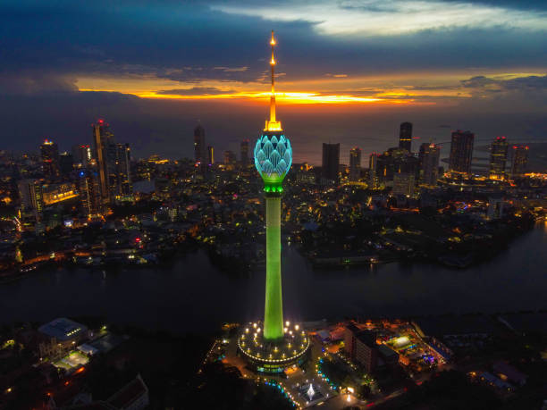
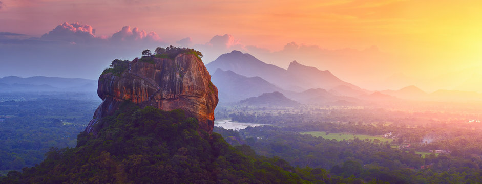
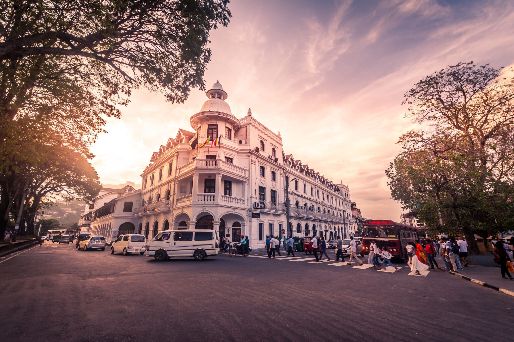
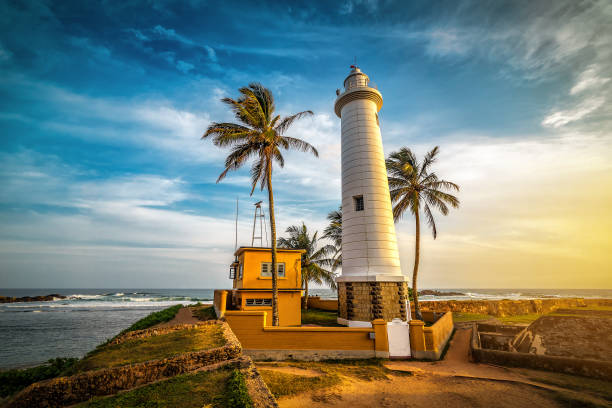
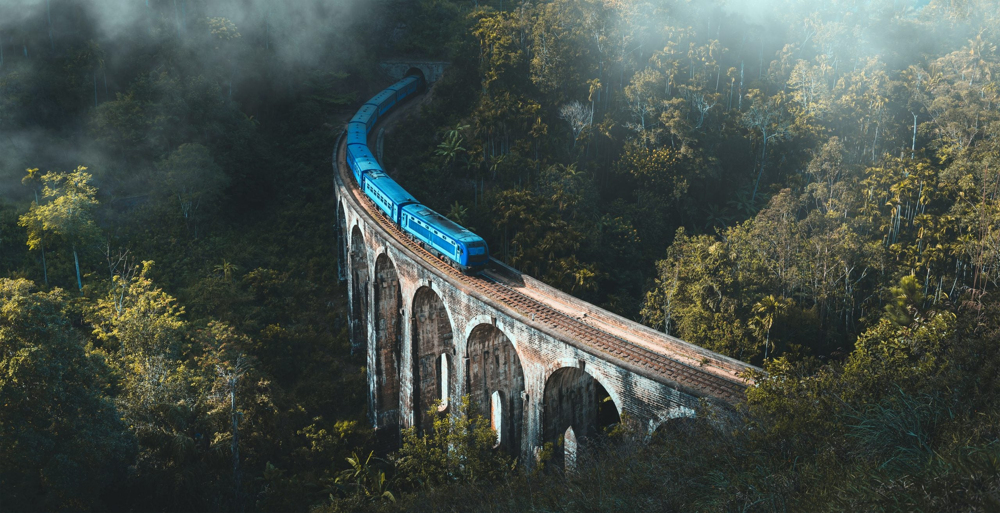

Western Province 📍 0 kmColombo
Sri Lanka's vibrant capital blends colonial-era architecture, buzzing street markets, rooftop restaurants, and a thriving arts scene along a palm-fringed coastline.

Cultural Triangle 📍 175 kmSigiriya
The legendary Lion Rock — a 5th-century palace and fortress rising 200m from the jungle plain, adorned with ancient frescoes and surrounded by water gardens.

Central Province 📍 116 kmKandy
Sri Lanka's cultural capital, home to the Temple of the Sacred Tooth Relic and the spectacular Esala Perahera — one of Asia's most magnificent festivals.

Southern Province 📍 116 kmGalle
A UNESCO-listed Dutch colonial fort town perched on a rocky promontory, its cobblestone streets lined with boutique hotels, art galleries, and sea-view cafés.

Uva Province 📍 197 kmElla
A small highland town perched above cloud level with sweeping valley views, the iconic Nine Arches Bridge, and the world's most scenic train ride to reach it.
 South Coast
📍 150 km
South Coast
📍 150 km
Mirissa
A dreamy crescent of golden sand. By day, spot blue whales offshore; by evening, watch the sun sink into the Indian Ocean from a coconut-lined shore.